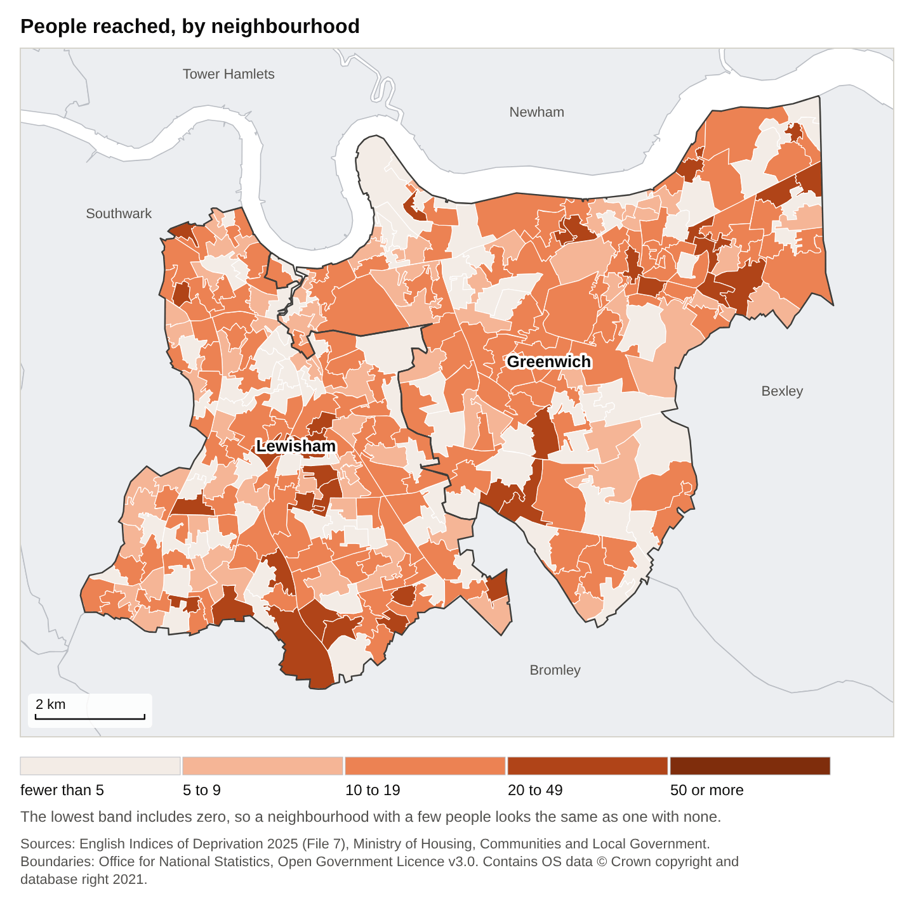
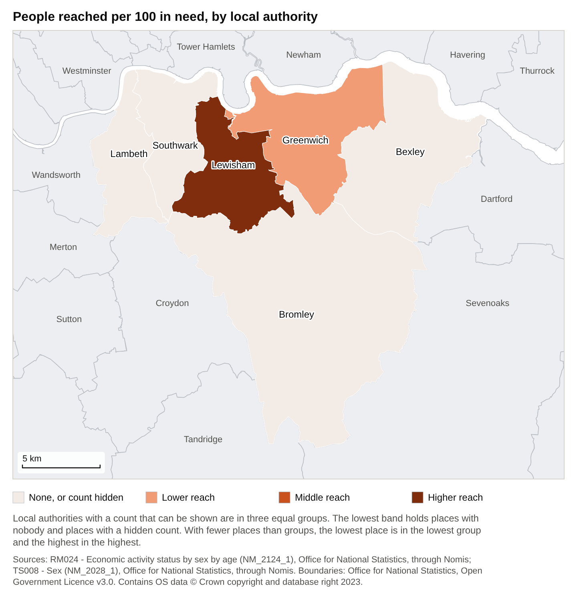
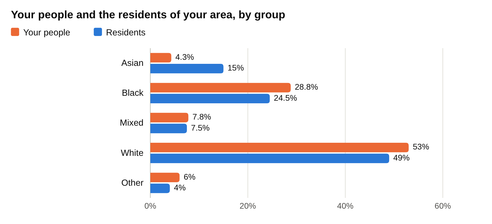
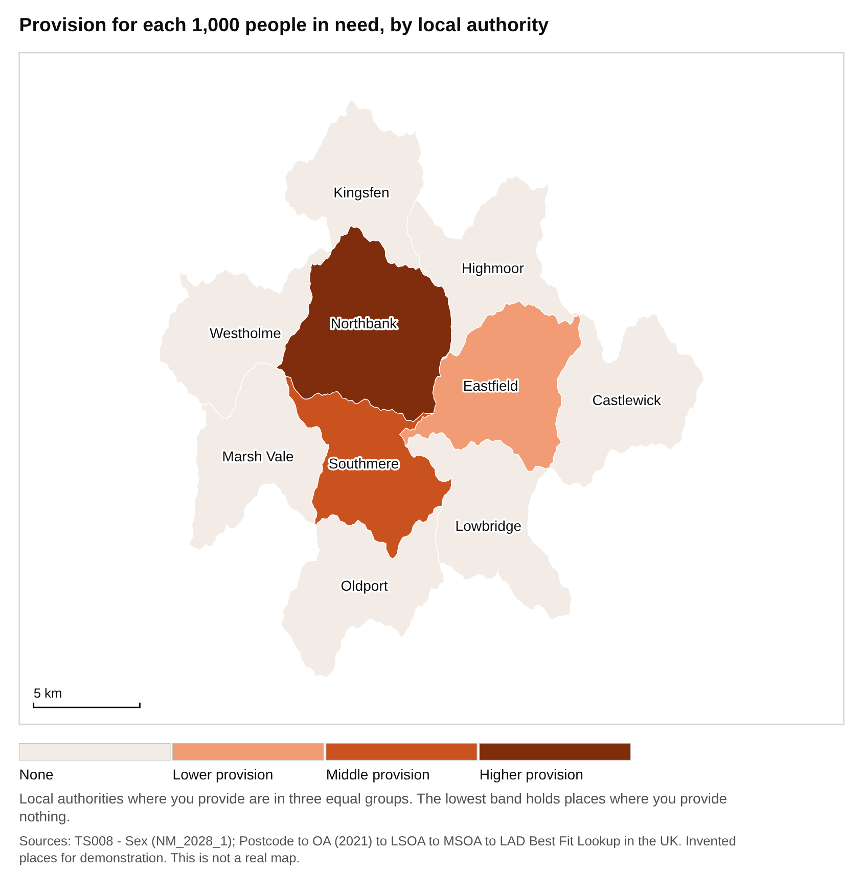
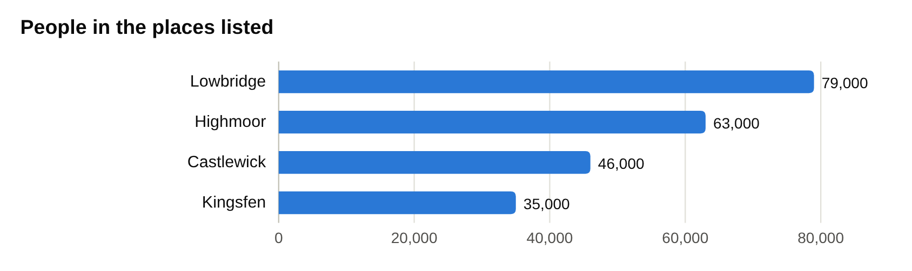

Open source data and AI tools for charities
Most charities cannot hire a data team. We build the tools a good one would use, keep them open, and make them work with the AI assistants people already have.
Free to use. Open source. Starting with the UK.
What we are building
Seven projects with one aim: a small charity should be able to answer its own questions, with its own data, without handing that data to anyone.
-
Opening soon
Kindtech Evidence
Ready-made analyses that set your data against UK open data: who you reach, where need is high, who you miss. Each gives figures you can quote, a map and the working.
For anyone with a spreadsheet.
-
Use it today
UK open data package
Area boundaries, official statistics, postcodes and deprivation indices for all four nations, in one Python package. It includes worked charity case studies you can run in the browser.
For people who code. It is called
uk-open-data. -
Early version
Skills for AI assistants
Skills that bring UK charity know-how and UK open data into the assistant you already use. Each one is tested against the assistant alone. The first helps write the evidence of local need for a grant application.
For anyone who uses an AI assistant.
-
Use it today
open-foi
Search Freedom of Information requests on WhatDoTheyKnow from the command line, and save what you find.
For researchers and campaigners who code.
-
Use it today
Charity AI use cases
A list of real examples of charities using AI, with what they learned. Read it before you start, and add your own.
For anyone at a charity.
-
Opening soon
Research graph
A research tool that keeps a source for every fact it records, so a finding can always be traced back to where it came from.
For researchers and policy teams.
-
Opening soon
Folio
A transcription app that runs entirely on your own computer. An interview or a meeting becomes text, and the recording never leaves your machine.
For anyone who records conversations.
Kindtech Evidence: see where you reach people, and where you don’t
Kindtech Evidence is a set of ready-made analyses. You give one a spreadsheet you already have, or a few totals, and it sets them against UK open data, so you can see which places and groups you reach and which you miss. You get:
- Figures you can quote, each with its source, for a funding bid or a trustee report.
- A map or a chart you can save as a picture. Areas are shaded. No dot is ever drawn for a person.
- The working, step by step, and every choice made for you, which you can change.
- Checks only you can do, such as whether each row is one person, listed beside the figures.
There are five so far. The first two maps are drawn on real places, Lewisham and Greenwich in London, with an invented charity’s counts. The other three pictures use invented data and invented places.
-
Are we reaching people in the most deprived neighbourhoods?
- You give
- The home postcodes of the people you helped, or a count for each neighbourhood.
- You get
- How many live in the most deprived parts of England, and how your reach there compares with your reach elsewhere.

People reached, by neighbourhood. Real neighbourhoods of Lewisham and Greenwich; the counts are invented. -
Where is need high and our presence low?
- You give
- Home postcodes, or a count of people for each local authority.
- You get
- The people you helped set against the people in need in each place, and a list of the places where need is high and you reach few.

People reached for each 100 in need, by local authority. Real boroughs and real need figures; the counts are invented. -
Who do we reach less than their share of the people who live here?
- You give
- The group each person is in, by ethnic group or by sex, or a count for each group.
- You get
- Each group's share of the people you helped beside its share of residents in the 2021 Census, and which groups you reach less than you would expect.

Your people and the residents of your area, by group. Invented figures. -
Where is provision thin against need across a region?
- You give
- Your sites or services, with what each provides, such as sessions a year.
- You get
- What you provide in each local authority set against the people in need there, and the high-need places with the least.

Provision for each 1,000 people in need, by local authority. Invented places. -
How far are people from our nearest site, and where would a new site help most?
- You give
- Where your sites are. Do not use it for a site whose address is confidential.
- You get
- The straight-line distance from each local authority to your nearest site, the share of people within reach, and the places where the most people are beyond it.

People in the places beyond reach of every site. Invented places.


These analyses cover England and Wales. The one about deprivation covers England only, because each nation measures deprivation in its own way.
Three ways to run them
-
Opening soon
On a web page
For anyone with a spreadsheet. Choose a file, say which column is which and read the answer. No installation and no account.
-
Early version
In your AI assistant
A first skill can be installed today. The connector that hands your assistant the figures opens with the page. The assistant is given totals only, never your rows, so a file of people goes to the page and totals go to the assistant.
-
For people who code
On your own computer
The same analyses are in the open source package and its command line. Your spreadsheet stays on your computer. Until our own postcode table is published, the list of postcodes in it is sent to postcodes.io to be placed, and nothing else is.
These analyses follow work first done by DataKind UK volunteers with charities.
Built for data about people
The same four rules hold in every project.
Totals, never rows
A result is never about one person. Small counts are hidden, and an AI assistant is given totals only.
Your computer first
The package, the command line and Folio run on your own machine. On the web page your file is opened in your browser, and only the columns an analysis needs are sent.
Nothing is kept
What you send to the web page is read for the run and then gone. There is no account, no database and no tracking.
You stay in control
Figures come from ordinary code that anyone can read, with the working shown. A person checks them before they are used.
Free, open, and how it is paid for
Everything on this page is free to use, and the code is open for anyone to read, check and improve.
Kindtech earns its keep from custom work: an analysis built for one charity's own question and data, at a price agreed before any work starts. That income pays for the open tools, so each paid piece of work leaves something behind for every other charity. Requests open with the page that runs the analyses.
Contribute
You do not need to write code to help. There are four ways in, and each is small enough to finish.
Add a use case
Work at a charity? Share an example of AI or data in use, and what you learned, in the use cases list.
Add a data source
Bring another public dataset into the package, so every analysis and skill can use it.
Add an analysis
Turn a question charities keep asking into a ready-made analysis, with its sources, working and checks.
Add a skill
Write down how a good analyst or fundraiser does a task, so an AI assistant can help with it properly.
Start with the contributing guide. Using an AI assistant to contribute is welcome: read the AI policy first. Never put data about real people in an issue, an example or a test.